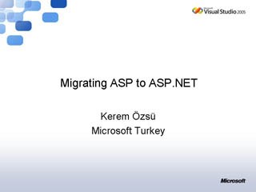
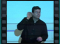

ASP.net Differences
Speaker(s): Dave Webster
A Look Inside Membership, Role Management, and Profiles in ASP.NET 2.0
Speaker(s): Stefan Schackow
Tips and Tricks with ASP.net 2.0
Speaker(s): Stefan Schackow
Creating Dynamic Web Sites with ASP.net 2.0 Web Parts
Speaker(s): Stefan Schackow
Visual Studio Team System: Testing and Tuning Web Apps - Part 1
Speaker(s): Dave Webster
Visual Studio Team System: Testing and Tuning Web Apps - Part 2
Speaker(s): Dave Webster
A Lap Around New Enhancements for Web Developers in Visual Studio 2005
Speaker(s): Dave Webster
The ASP.NET 2.0 Data Controls
Speaker(s): Kerem Ozsu
Best Practices and Techniques for Migrating Classic ASP Applications to ASP.NET 2.0

Speaker(s): Kerem Ozsu
ASP.NET 2.0 - Master pages, themes, and site navigation
Speaker(s): Kerem Ozsu
ASP.NET "Atlas" Overview
Speaker(s): Kerem Ozsu
What's new in Visual Basic 2005
Speaker(s): Jay Roxe,Tyler Whitney
Windows forms 2.0 development and deployment
Speaker(s): Tyler Whitney
Introduction to ASP.net 2.0 using Visual Basic 2005
Speaker(s): Alexander Holy
Smart Client development using visual studio tools for office and windows mobile.
Speaker(s): Jay Roxe
Top Ten tips and Tricks from the Visual basic team

Speaker(s): Tyler Whitney